Activity: Using regions to create tabs and cuts
Click here to download the activity files.
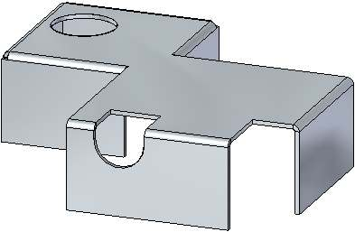
Objectives
This activity demonstrates how to create various tabs in sheet metal and how to use regions to make cuts. In this activity you will:
-
Create a tab base feature from a sketch.
-
Add additional tabs to the base feature.
-
Create flanges.
-
Explore the different options available when cutting a sheet metal part.
Start Solid Edge 2023.
Open tab_cut_activity.psm.
In this activity, the material thickness has been set to 2.0 mm and the bend radius has been set to 1.0 mm.
On the File menu, click Save As→ Save As .
On the Save As dialog box, in the File box, save the part to a new name or location so that other users can complete this activity.
Use the region shown to create the base feature from the sketch geometry. Select the handle pointing up.
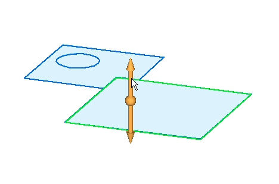
Click to place the base feature, a tab, above the sketch as shown. Press Enter to accept the material thickness of 2.00 mm.
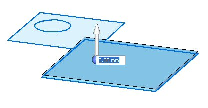
To place the next tab, select the region shown.
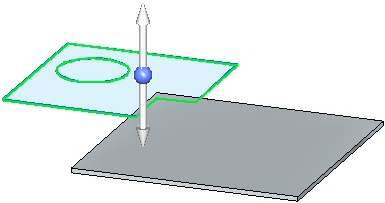
Select the handle pointing up as shown. Since the material thickness is defined, the tab will be placed when the handle is selected.
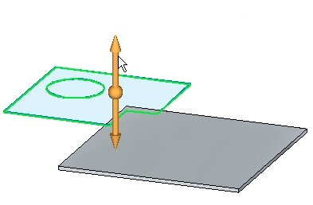
The base feature appears as shown.
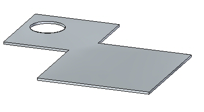
Select the faces as shown and click the handle pointing up.
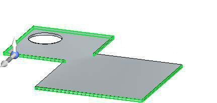
Pull the flange down a distance of 40.00 mm.
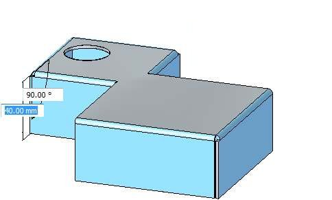
Lock the sketch plane to the top face and place a rectangle approximately as the one shown below.
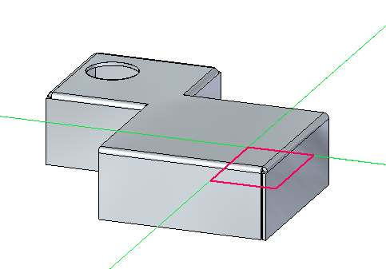
Select the two regions shown. Notice the Cut command is selected. Ensure the other options on the command bar match the illustration and click the downward pointing handle as shown.
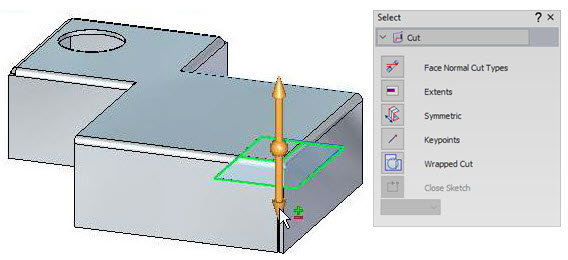
Click the endpoint on the edge shown to create the cut.
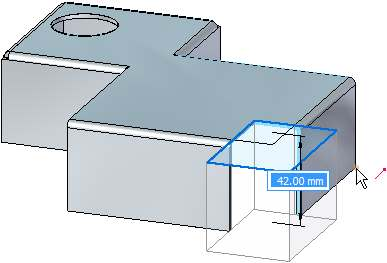
Notice the depth of the cut is defined by the vertical distance below the regions.
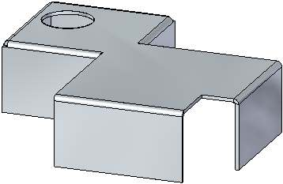
The wrapped cut command temporarily flattens the bend to place the cut.
Create an approximate sketch as shown below. Do not extend the sketch more than 30.00 mm from the edge of the flange.
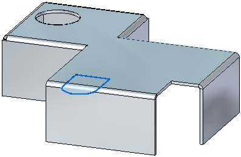
Select the two regions shown and click the
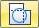
Wrapped Cut option as shown.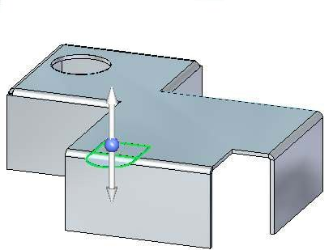
Select the downward pointing handle. The part is unfolded showing a preview of the wrapped cut. Right-click to accept.
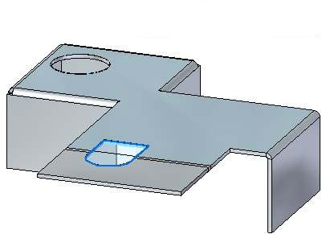
The results are shown.
Close the sheet metal document without saving.
Click the File tab→ Open→ Browse → tab_move_activity.psm.
Select the primary axis of the thickness face shown. The Extend/Trim option is the default.
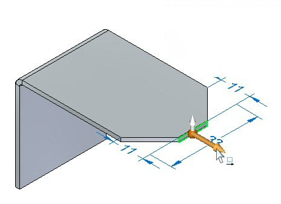
Click the primary axis and move it toward the bend. Enter a distance of 5.00 mm.
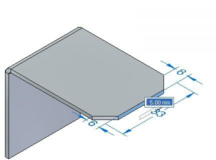
Observe the behavior. The length of the thickness face changes and the orientation of the adjacent faces remains constant. The result is as shown below.
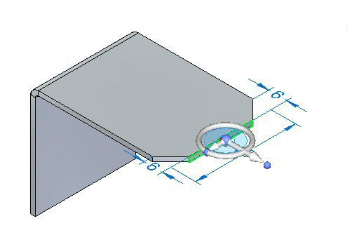
Select the primary axis and the Tip option as shown.
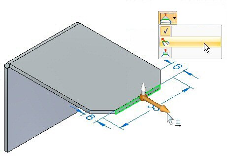
Enter 11.44 mm for the distance to move the thickness face.
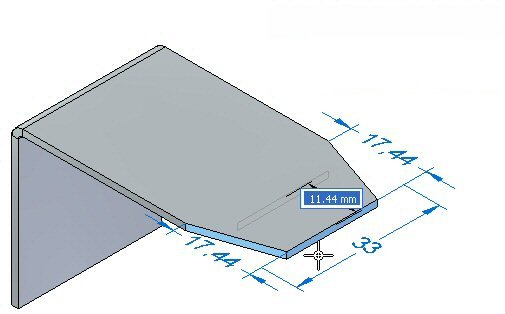
Observe the behavior. The length of the thickness face is constant and the orientation of the adjacent faces changes. The result is as shown below.
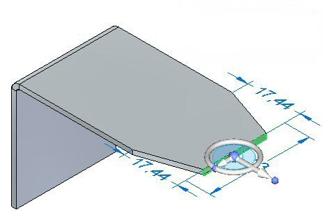
Select the primary axis and the Lift option as shown.
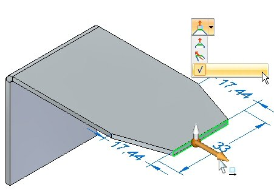
Enter a value of 10.00 mm.
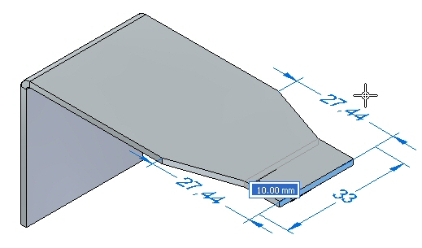
Observe the behavior. The length of the thickness face is constant and the orientation of the adjacent faces are constant. The tab extends perpendicular to the thickness face. The result is as shown below.
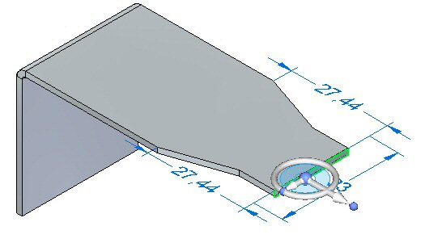
This completes the activity. Close the sheet metal document without saving.
In this activity you created a sheet metal base feature using a tab, and added additional material creating a tab from a sketch. Regions were used to create a cut and a wrapped cut. You learned the different options for moving a thickness face.
-
Click the Close button in the upper- right corner of this activity window.
Answer the following questions:
-
Name two commands which can generate a base feature in a sheet metal document.
-
Are open cutouts valid in a sheet metal document?
-
What is a wrapped cut in sheet metal?